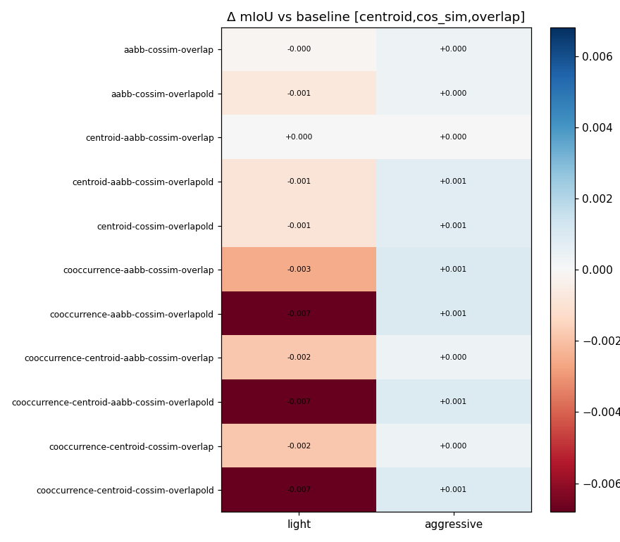
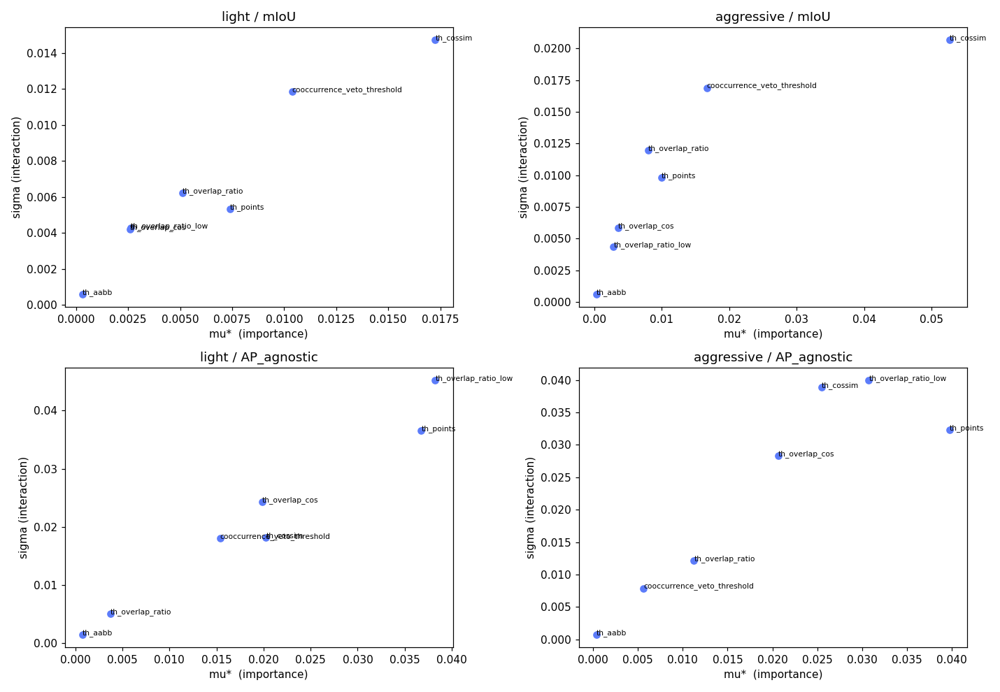
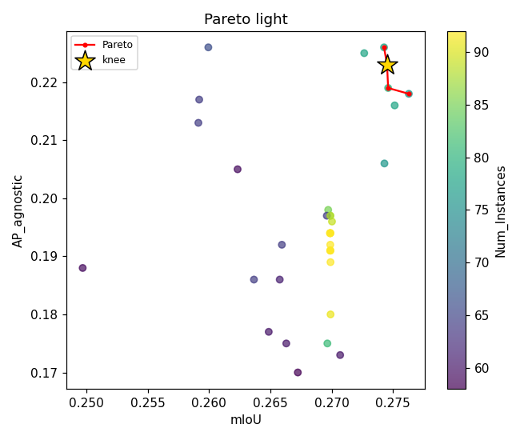
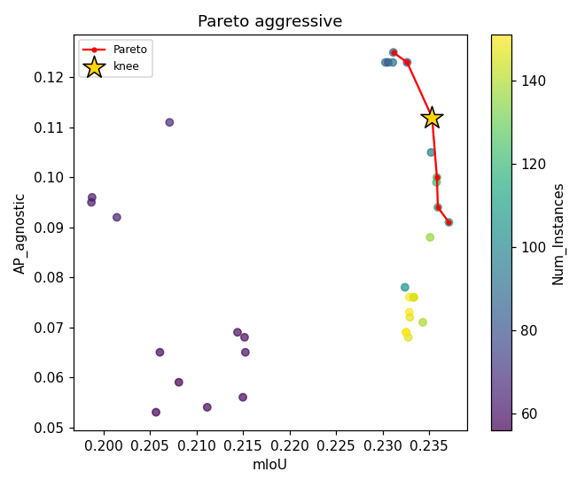
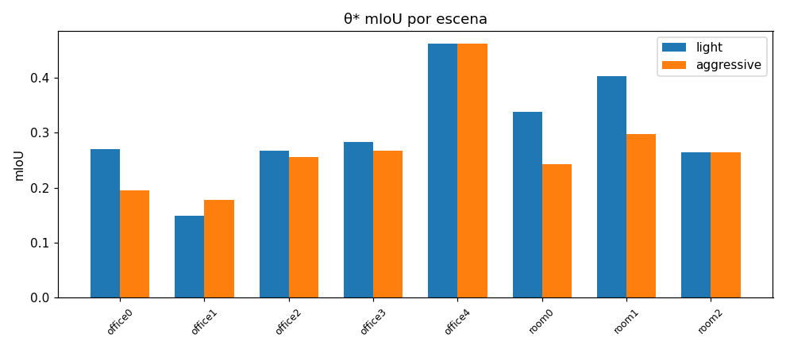
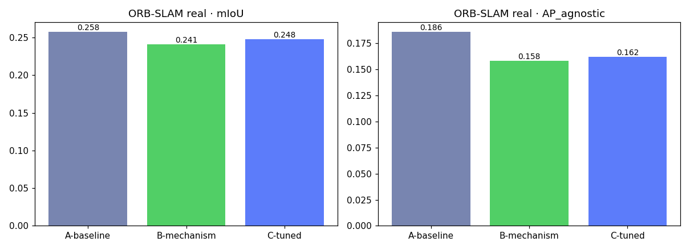

¿Qué configuración del algoritmo de fusión produce el mejor mapa semántico bajo drift, y por qué?
Dataset Replica (8 escenas) · fusion_method = clip ·
backend SimulatedSLAM/GTJump determinista · validación en ORB-SLAM real ·
commit 5fb61fe · 2026-06-14
← → para navegar · barra espaciadora avanza
Con drift (saltos de trayectoria), un mismo objeto se duplica en el mapa. La fusión debe reunir esos duplicados sin mezclar objetos distintos. Ocurre una sola vez, al final, comparando O(N²) pares por una cadena de criterios con early-exit:
cooccurrence → centroid/aabb → cos_sim → overlap
Solo overlap puede FUSIONAR; el resto solo descarta o pasa.
Los criterios comparten contexto → están acoplados (por eso θ se optimiza
como vector, no parámetro a parámetro).
Cada experimento es un replay desde checkpoint: restaura el mapa ya corregido y re-ejecuta solo la fusión. Salta SLAM y SAM2. Determinista (seed fijo) → mismo θ da siempre el mismo resultado.
consecuencia Sin repeticiones ni seeds. La unidad estadística es la escena (n=8). Se comparan configuraciones con Wilcoxon pareado por escena, no con "subió 0.3".
AP_agnostic es el termómetro honesto de la fusión. mIoU mide otra cosa (clasificar) y puede quedarse plano aunque la fusión mejore. Por eso el objetivo es multi-objetivo (frente de Pareto): maximizar mIoU y AP_agnostic a la vez, vigilando Ninst (caída brusca + AP↓ = over-merge; inflado = under-merge, fantasmas sin fusionar).
Cadena por defecto [centroid, cos_sim, overlap] con umbrales default. Es lo que hay que batir.
| Condición | mIoU | APagnostic | mAcc | Ninst |
|---|---|---|---|---|
| light | 0.2663 | 0.1540 | 0.3997 | 68 |
| aggressive | 0.2280 | 0.0950 | 0.3429 | 83 |
Lo esperado: aggressive es peor en todo (salto mayor → menos solape → duplicados sin fusionar → más instancias, 83 vs 68, y AP_agnostic casi la mitad). Confirma que el banco de pruebas discrimina dificultad.
Factorial de cadenas con umbrales en default. Comparación honesta: solo cambia la estructura.
| cadena | mIoU | APagn | N |
|---|---|---|---|
| baseline (sin cooc) | 0.2663 | 0.1540 | 68 |
+cooccurrence | 0.2685 | 0.2130 | 74 |
AP_agnostic +38% · mIoU plano · Wilcoxon p=0.945 (no signif.)
| cadena | mIoU | APagn | N |
|---|---|---|---|
| baseline (sin cooc) | 0.2280 | 0.0950 | 83 |
+cooccurrence | 0.2350 | 0.1040 | 90 |
AP_agnostic +9.5% · mIoU plano
Resultado contraintuitivo. El playbook predecía que activar
cooccurrence en jump-drift dañaría (protegería duplicados de fusionarse).
No fue así: subió la pureza de instancia sin tocar mIoU.
Los rediseños overlap nuevo vs overlap_old y aabb vs centroid
resultaron neutros (Δ ≈ 0).

Cada cadena vs baseline, por escena. Verde = mejora, rojo = empeora. La señal en mIoU es muy pequeña y mixta → ninguna cadena gana claramente en mIoU. La diferencia real está en AP_agnostic (cooccurrence), no aquí.
Pregunta: de las ~8 perillas del vector θ (th_cossim, th_points…),
¿cuáles mueven la métrica y cuáles son peso muerto?
Probar todas las combinaciones de 8 umbrales = explosión. Y moverlos uno a uno (OFAT)
miente, porque la cadena los acopla: cambiar th_cossim cambia qué pares
llegan vivos a overlap.
Muchos paseos cortos aleatorios por el espacio. En cada uno, desde un punto al azar, mueve una perilla un paso y mide cuánto salta mIoU = "efecto elemental". Repite desde muchos puntos.
| Indicador | Mide | Si es alto… |
|---|---|---|
| μ* | tamaño medio del salto = IMPORTANCIA | la perilla mueve la métrica |
| σ | variación del salto = INTERACCIÓN | su efecto depende de las otras |
SALib · ~10 trayectorias · cada evaluación = un replay sobre las 8 escenas · por condición y por objetivo.
Fijar a default las perillas muertas → reducir θ antes de gastar presupuesto de optimización (RQ2).

| parámetro | μ* (norm.) |
|---|---|
th_cossim | 1.00 |
th_points | 1.00 |
th_overlap_ratio_low | 1.00 |
cooccurrence_veto | 0.60 |
th_overlap_cos | 0.52 |
th_overlap_ratio | 0.30 |
th_aabb | 0.02 |
th_aabb es irrelevante → la geometría no es el cuello de botella.
Lo que decide es la puerta semántica (cos_sim) y el solape (points / ratio_low).
Pregunta: a las ~6 perillas que importan (de RQ3), ¿qué valores maximizan mIoU y AP_agnostic a la vez?
Fuerza bruta imposible (valores continuos, 6 dimensiones). Optuna hace optimización bayesiana: prueba una combo → ve el resultado → se modela la superficie → elige la siguiente combo donde espera mejora, no al azar. 150 intentos por condición.
Subir AP_agnostic a veces baja mIoU. No hay un único ganador → hay un conjunto de mejores compromisos = frente de Pareto. Un punto está en el frente si no puedes mejorar un objetivo sin empeorar el otro.
Optuna · muestreador NSGA-II · guardado en SQLite (reanudable) · 2 estudios independientes (light, aggressive) · cada trial = un replay sobre 8 escenas.
El knee = punto del frente más cercano a la esquina ideal (mIoU y AP máximos a la vez). Ese es el θ* elegido como config de la condición.
No se colapsan los 2 objetivos en una nota con peso λ arbitrario: sería indefendible. Se reporta el frente entero y se justifica el knee.

light

aggressive
| θ* (knee) | mIoU | APagn | vs baseline AP |
|---|---|---|---|
| light | 0.2745 | 0.2230 | +45% |
| aggressive | 0.2353 | 0.1120 | +18% |
Dos optimizaciones independientes (NSGA-II, 150 trials c/u). Knee = punto del Pareto más cercano
a la esquina ideal. El salto de AP_agnostic viene de cooccurrence + bajar th_cossim (0.81→0.70) y th_points (0.1→0.027).
| θ* ↓ \ eval → | en light | en aggressive |
|---|---|---|
| knee light | 0.2745 | 0.2311 |
| knee aggressive | 0.2751 | 0.2353 |
mIoU al cruzar. El knee de aggressive iguala al de light en light (0.2751 ≈ 0.2745) y cae menos → generaliza mejor.

Consistente entre condiciones ✔ · dispersión entre escenas baja (std mIoU ≈ 0.08) · LOSO estable (std ≈ 0.012). El óptimo no es un pico de una escena.
Todo lo anterior es sim determinista. La prueba de fuego: repetir en ORB-SLAM real (drift real, 8 escenas).
| config (real) | mIoU | APagn | N |
|---|---|---|---|
| A · baseline | 0.2577 | 0.186 | 71 |
| B · +mecanismo | 0.2412 | 0.158 | 76 |
| C · tuned | 0.2476 | 0.162 | 71 |
| D · sin cooc | 0.2586 | 0.175 | 66 |
El baseline (A) gana. Activar cooccurrence (B vs A): AP_agnostic −15.6%, mIoU −1.6% (Wilcoxon p=0.102, n=8).

El hallazgo NO transfiere. El mecanismo que subía AP_agnostic en sim lo degrada en SLAM real. El beneficio era un artefacto del modelo de perturbación.
cooccurrence veta fusionar dos instancias vistas juntas en >N keyframes
(co-visibles = objetos distintos).
Los duplicados son el mismo objeto separado en el tiempo por el salto → NO co-visibles → cooccurrence no los veta (bien), y de paso protege objetos genuinamente distintos. → sube pureza.
El drift se acumula gradualmente mientras el objeto sigue en vista → los duplicados SÍ aparecen co-visibles → cooccurrence los veta mal → under-merge. → baja pureza.
overlap nuevo y aabb son neutros. mIoU plano en todo el estudio.th_cossim, th_points, th_overlap_ratio_low;
la geometría (aabb) es irrelevante. Hay interacción entre umbrales.Mensaje central. La contribución no es "encontré la mejor fusión", sino un protocolo riguroso (replay determinista, Pareto, cribado, validación externa) que detecta que una mejora prometedora en sim es un artefacto. Resultado negativo, pero honesto y útil.
fusion_method = clip.jump_seed = 42.Knee de aggressive (mejor generalización). Pero para SLAM real, el baseline sigue siendo la opción segura.
runs_master.parquet (todos los runs + θ + commit),
optuna_*.db, conclusions.json, manifest_index.csv.